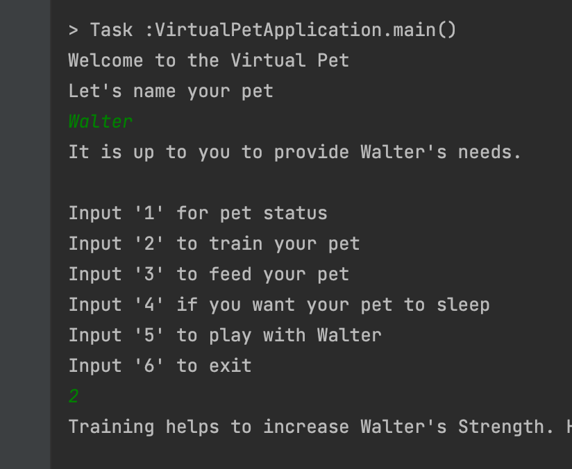

Virtual Pet
A console based application utilizing TDD, Loops and Arrays.
After spending nearly 30 years in the Aerospace industry doing everything from inspection, to programming, to design engineering, I am now utilizing my innovative problem solving skills in the realm of Software Development.
Intergrated CMM inspection capabilities for both production and tool design validation.
Programming CNC machines in various softwares for 3 axis to 5 axis high speed machines. Design of fixtures, gauges and tooling for both the Aerospace and Medical fields. Trained in Java, Html, CSS and JavaScript.Some of the projects that I have done as I have developed my skills in Software Development.
A console based application utilizing TDD, Loops and Arrays.

Expanding on the Virtual Pet with an emphasis on mapping.
A Java console based application with a focus on OOP, comparable interfaces and encapsulation.